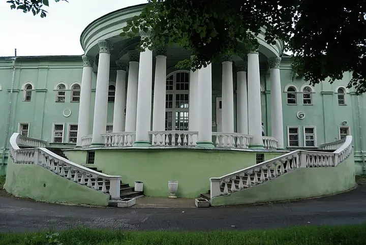

Фото: Volchonock, CC BY-SA 3.0 · Wikimedia Commons
Концертная площадка · СВАО
Зелёный театр ВДНХ
Летняя сцена ВДНХ под открытым небом: концерты и кино.
- ₽₽ · 1 500–3 000 ₽ на человека
Позвать сюда: Зелёный театр ВДНХОткрыть в каталоге: Зелёный театр ВДНХМаршрут до места: Зелёный театр ВДНХ
Адрес и детали
- Адрес
- ВДНХ, просп. Мира, 119
Открыть на Яндекс Картах (в новой вкладке) - Метро
- м. ВДНХ
- Округ
- Северо-Восток (СВАО)
- Цена
- 1 500–3 000 ₽ на человека
- Телефон
- +7 (495) 544-34-00
- Проверено
- работает — проверили в октябре 2026
Похожие рядом


Что ещё рядом

Как позвать
- Выбери план, место или событие — в карточке адрес, цены и маршрут в Яндекс Картах.
- Нажми «Позвать сюда» — соберётся приглашение-игра для свидания или голосование для компании.
- Отправь ссылку в любой мессенджер: тебе ответят, а компания отметит, куда и когда может. Бесплатно и без регистрации.